Duration : 15 mins
Persona : API Team
Use case
You have a requirement to create a reverse proxy to handle requests from the Internet and forward them to an existing service. You have decided to follow a design first approach and built a reusable component, a specification which can be used to describe the API contract, generate API documentation, generate API test cases, etc., using the OpenAPI Specification. You would like to generate an Apigee API Proxy by using the OpenAPI Specification (fka: Swagger) instead of building the API Proxy from scratch.
How can Apigee API Management help?
Apigee enables you to quickly expose services as APIs. You do this by creating an API proxy, which provides a facade for the service that you want to expose, such as existing API endpoints, generic HTTP services, or applications (such as Node.js). The API proxy decouples your service implementation from the API endpoint that developers consume. This shields developers from future changes to your services as well as implementation complexities. As you update services, developers, insulated from those changes, can continue to call the API, uninterrupted. On Apigee, the API Proxy is also where runtime policy configuration is applied for API Management capabilites. For further information, please see: Understanding APIs and API Proxies.
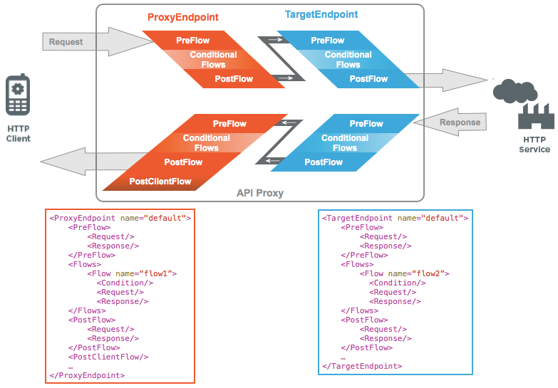
Apigee also supports the OpenAPI specification out of the box, allowing you to auto-generate API Proxies. Apigee has a built-in OpenAPI specification editor and store which you can use to design and maintain your OpenAPI specifications.
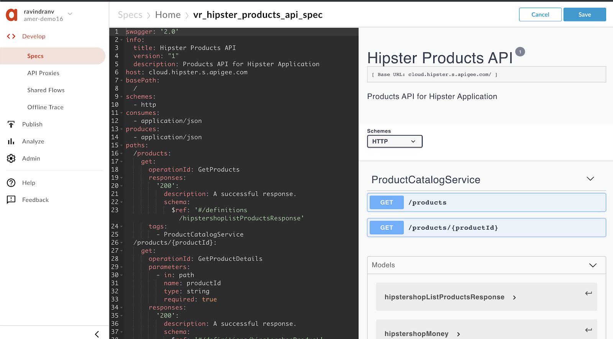
In this lab, we will learn how to
- design an OpenAPI specification for an existing HTTP service and store it within the Apigee platform, and
- create an API proxy that routes inbound requests to an existing HTTP service.
- Basic understanding of OpenAPI Specification (FKA: Swagger)
- Access to an HTTP client to test the API (eg. cURL, Postman, etc.). If you do not have access to one, you can use the Apigee Trace Tool or the Apigee REST client.
Note: During this workshop, as you may be working within an Apigee Organization (Org) that is shared by multiple users. Please prefix all asset names within the Org with your initials. For example, Spec name = {your-initials}_{spec name}, API proxy name = {your-initials}_{proxy name}, etc.
During the course of this lab, the sample HTTP service we will expose as an API endpoint is the Hipster Products service located at http://cloud.hipster.s.apigee.com/products. First, we are going to design and create an OpenAPI specification for the different resource endpoints, i.e. /products and /products/{productId}.
- Go to https://apigee.com/edge and log in. This is the Apigee management UI.
- Select Develop → Specs in the side navigation menu

- As we have a pre-designed sample of the spec available for this lab, we will be importing it into your Apigee Org's Spec Store. Click +Spec. Click on Import URL to add a new spec from existing source.
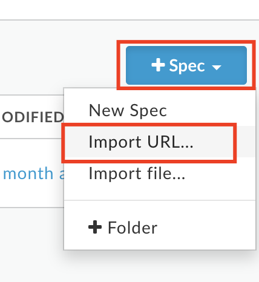
- Enter spec details. Replace {your-initials} with the initials of your name.
- File Name: {your-initials}_hipster_products_api_spec
- URL: https://raw.githubusercontent.com/apigee/apijam/master/Module-1/Resources/products-catalog-spec.yaml

- Verify the values and click Import. Spec has been imported into Apigee and is ready to use. You should see your spec in the list. For example,
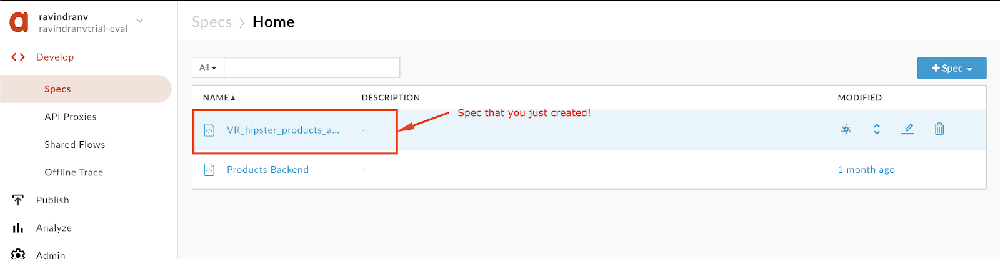
- Click on {your-initials}_hipster_products_api_spec from the list to access the OpenAPI spec editor & interactive documentation that lists API details & API Resources.
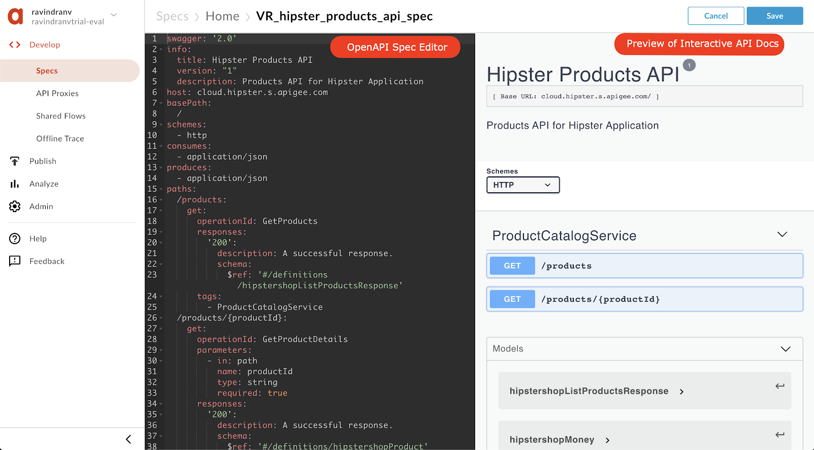
- It's time to create Apigee API Proxy from an OpenAPI Specification. Click on Develop → API Proxies from side navigation menu.
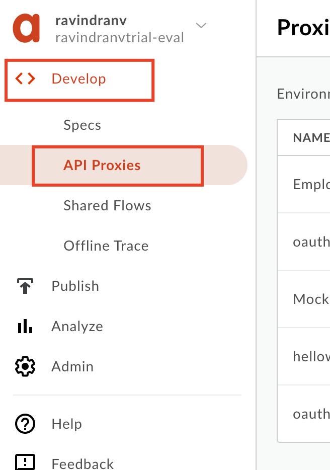
- Click +Proxy The Build a Proxy wizard is invoked.
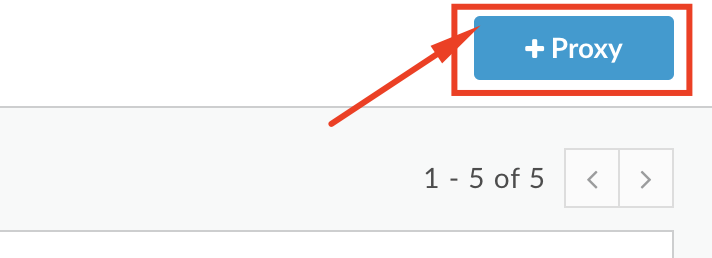
- Select Reverse proxy, Click on Use OpenAPI below reverse proxy option.

- You should see a popup with list of Specs. Select {your-initials}_hipster_products_api_spec and click Select.
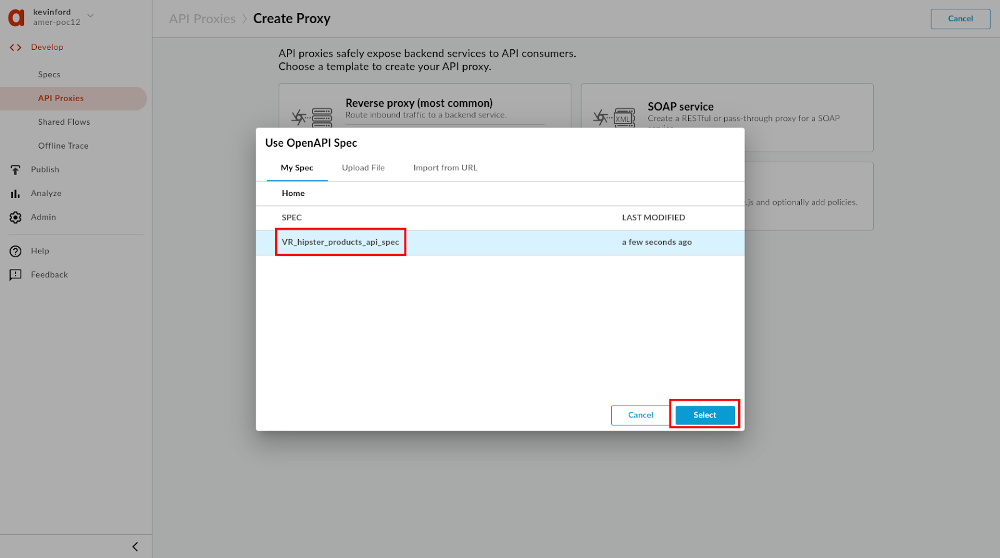
- Enter details in the proxy wizard. Replace {your-initials} with the initials of your name.
- Proxy Name: {your_initials}_Hipster-Products-API
- Proxy Base Path: /v1/{your_initials}_hipster-products-api
- Existing API: Observe the field value which is auto filled from OpenAPI Spec.

- Verify the values and click Next.
- Select Pass through (none) for the authorization in order to choose not to apply any security policy for the proxy. Click Next.

- You can select which API resources, from the list configured in the OpenAPI Spec, should be exposed. Select all & Click on Next

- Go with the secure Virtual Host configuration. Ensure that the default one is unchecked.
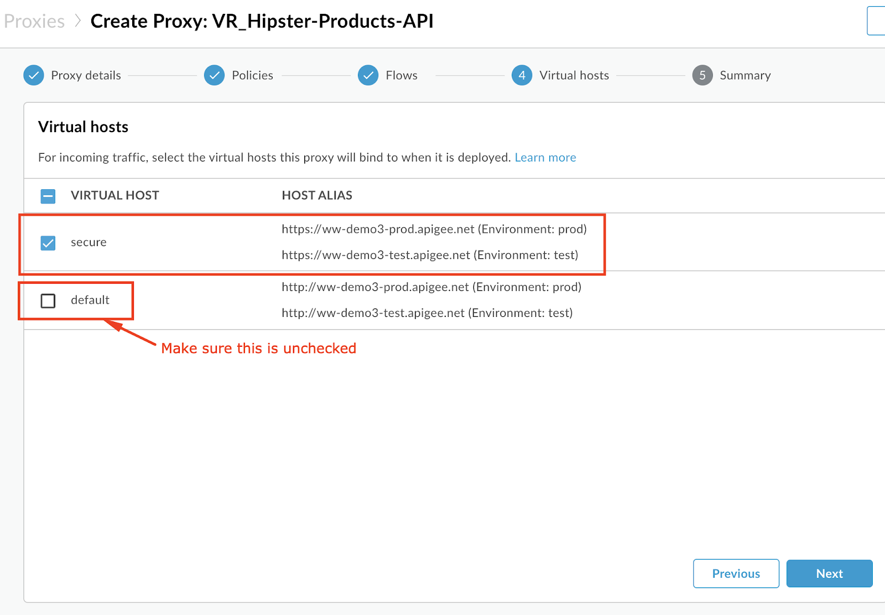
- Ensure that only the test environment is selected to deploy to and click Create and Deploy

- Once the API proxy is created and deployed click Edit Proxy to view your proxy in the proxy editor.

- Congratulations! ...You have now built a reverse proxy for an existing backend service. You should see the proxy Overview tab.

Let us test the newly built API proxy. You can use any HTTP client like cURL or Postman, or the Apigee Trace Tool.
Using cURL
org = Organization name env = Environment where API is deployed
curl -X GET "https://{{org}}-{{env}}.apigee.net/{{your initials}}_hipster-products-api/products"
Using Trace Tool:
- Navigate to your proxy's Trace tab.
- Ensure that the deployed API revision is selected.
- Hit Start Trace Session.
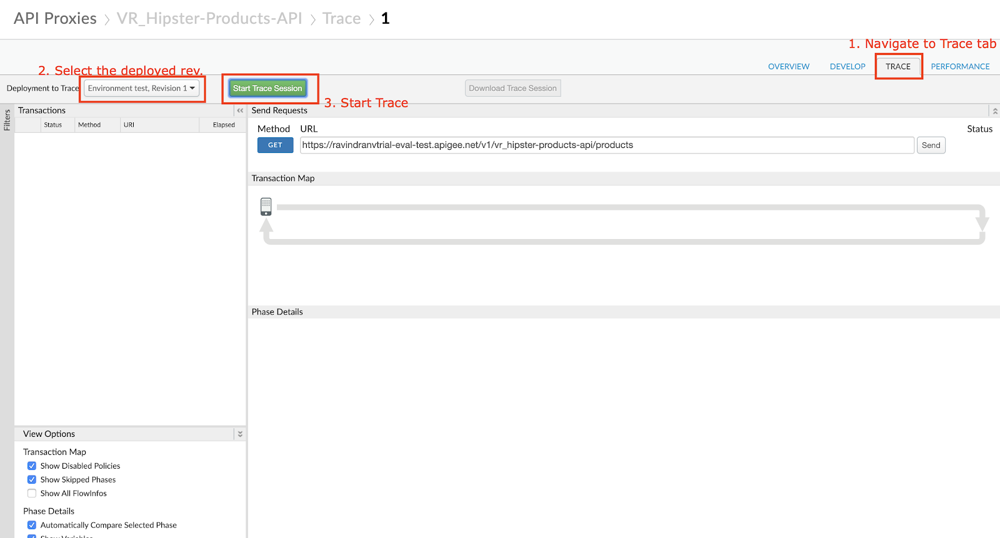
- Wait for Trace session to start.
- Modify the URL to send to a valid API resource - append a '/products' to the end of the URL.
- Hit 'Send'.
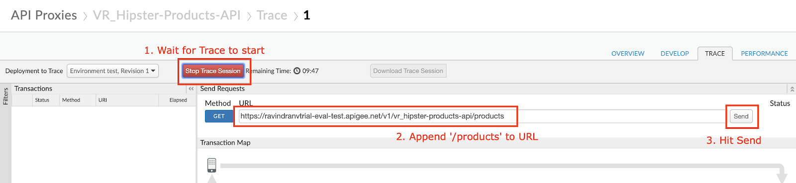
- You will see that the API proxy recieved the request and sent back a HTTP status 200 response which was logged by the Trace session. You can click on the step shown below to view the response body.

Save the API Proxy
- Let's save the API Proxy locally as an API Bundle so that we can reuse it in other labs.
- Save the API Proxy by downloading the proxy bundle, See screenshot below for instructions.

That completes this hands-on lesson. In this simple lab you learned how to use Apigee to proxy an existing backend using an OpenAPI Specification and the Apigee proxy wizard.
Lab Video
If you like to learn by watching, here is a short video on creating a reverse proxy using OpenAPI Specification - https://www.youtube.com/watch?v=3XBG9QOUPzg
Earn Extra-points
Now that you have created a reverse proxy using an OpenAPI spec, click on the Develop tab and explore the flow conditions populated from the OpenAPI spec. Further expore the trace tab in the API Proxy editor which supports filtering traces as well as downloading trace data for offline use. Also, explore the OpenAPI Spec editor which allows you to edit an OpenAPI specification and supports bidirectional navigation between the yaml/json and a live view of the rendered OpenAPI spec. See how you can generate an API Proxy using the "Generate proxy" action in the Specs view. 
Quiz
- How do you import the proxy bundle you just downloaded?
- How does Apigee handle API versioning?
- Are there administrative APIs to create, update, or delete API proxies in Apigee?
References
- Useful Apigee documentation links on API Proxies -
- Build a simple API Proxy - http://docs.apigee.com/api-services/content/build-simple-api-proxy
- Best practices for API proxy design and development - http://docs.apigee.com/api-services/content/best-practices-api-proxy-design-and-development
- Watch this "4 Minute Video 4 Developers" (4MV4D) on "Anatomy of an API Proxy" - https://youtu.be/O5DJuCXXIRg
Rate this lab
How did you like this lab? Rate here.